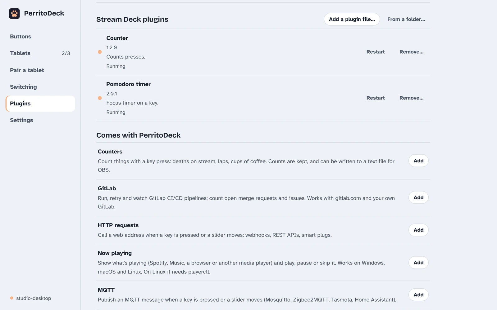

Plugins
Plugins add new things your buttons can do and new live values your titles can show. PerritoDeck comes with 24 of them, and it can also run many plugins made for the Elgato Stream Deck.
What plugins are
A plugin is a small program that runs alongside PerritoDeck on your computer. Once you add one, its actions appear in the When pressed list of the button editor, in a group with the plugin's name, and its values appear in Insert a live value….
Plugins run on your computer with the same permissions as you, so only add plugins you trust. The ones that come with PerritoDeck are written by the PerritoDeck project and their source code is public.
Add a plugin
Open the Plugins page. It has a few sections:

- Installed: the plugins you've added, each with its status (for example Running) and buttons to Restart or Remove… it.
- Comes with PerritoDeck: the first-party plugins. Click Add next to the ones you want. Nothing is downloaded; they're already on your computer.
- More plugins online: click Look online to see plugins from the catalogue on perritodeck.dev, then Add. PerritoDeck only goes online when you click the button. Coming The online catalogue isn't published yet.
- Stream Deck plugins: see below.
If someone gives you a plugin as a folder, click Install from folder… at the top of the page and pick it.
You need Python
All the plugins that come with PerritoDeck are written in Python, so your computer needs Python 3 installed. Macs and most Linux systems have it already. On Windows, install it from python.org or the Microsoft Store. If it's missing, the plugin's status says Needs Python 3, which isn't installed; after installing it, click Restart.
Plugin settings
Some plugins need to know a few things before they work, such as a server's address or a password. Those plugins have a Settings button on the Plugins page. Click it, fill in the form and click Save settings.
Settings are kept only on your computer, in a file only your user account can read, and they're never part of an exported profile. Password fields are hidden as you type.
Settings for a single button, such as which timer to start, are set in the button editor instead, under When pressed.
The plugins that come with PerritoDeck
Each plugin below has an example title showing one of its live values. Paste it into a button's title, or pick the value with Insert a live value….
HTTP requests
Calls a web address when you press a button or move a slider: webhooks, smart plugs, home-made gadgets. Settings per button: web address, method, body and headers.
Example title: {plugin:dev.perritodeck.http:last-status} shows the status of the last request.
MQTT
Publishes a message to an MQTT broker (such as Mosquitto) when you press a button or move a slider. Good for Zigbee2MQTT, Tasmota and Home Assistant. It has actions but no live values.
Now playing
Shows what's playing and adds play/pause, next and previous. Works with Windows' media controls, Spotify or Music on a Mac, and on Linux with any player through playerctl (install it first).
Example title: {plugin:dev.perritodeck.media:title} shows the artist and title.
OBS Studio
Full control of OBS 28 and newer: scenes, Studio Mode, transitions, streaming, recording, the replay buffer, the virtual camera, audio, sources, filters, screenshots, media and text sources, projectors, profiles and more, with live status. Fill in the OBS address and password under Settings.
Example title: LIVE\n{plugin:dev.perritodeck.obs:stream_time} shows how long you've been streaming.
Timers
Countdowns, stopwatches and a Pomodoro timer, each with its own name so several can run at once. They keep counting if PerritoDeck restarts. Optionally plays a sound when time's up.
Example title: Tea\n{plugin:dev.perritodeck.timer:remaining:tea} shows the time left on the "tea" countdown, like 3:41.
Counters
Counts presses: deaths on stream, laps, cups of coffee. Counts are kept, and can be written to text files that OBS can show on screen.
Example title: Deaths: {plugin:dev.perritodeck.counter:count:deaths}
Is it up?
Checks whether your servers and web services answer, from your computer. Perfect for a homelab wall where each button turns red when a service is down.
Example title: NAS\n{plugin:dev.perritodeck.uptime:ms:nas.local:22} shows how fast the NAS answers, like 12 ms.
Wake-on-LAN
Switches on a computer or server on your network with a button press. Wake-on-LAN has to be turned on in that computer's BIOS or network settings. It has an action but no live values.
Weather
Current weather and today's forecast for any place, from Open-Meteo. Free, with no account. Choose metric or imperial units in Settings.
Example title: {plugin:dev.perritodeck.weather:icon:Lisbon} {plugin:dev.perritodeck.weather:temp:Lisbon} shows something like ⛅ 18°C.
Ollama
Loads, unloads and downloads local AI models in Ollama, shows which are loaded, and can ask a model a question from a button, putting the answer on your clipboard.
Example title: {plugin:dev.perritodeck.ollama:loaded} lists the loaded models.
Proxmox VE
Starts, shuts down, restarts and snapshots Proxmox virtual machines and containers, and shows their status, CPU and memory. Needs an API token, filled in under Settings.
Example title: VM 101\n{plugin:dev.perritodeck.proxmox:status:101} shows running, stopped or paused.
TrueNAS
Shows pool health and space, alerts and apps; starts and stops apps, scrubs pools and runs backup tasks. For TrueNAS Community Edition 25.04 and newer. Needs an API key.
Example title: tank\n{plugin:dev.perritodeck.truenas:pool_used:tank}% shows how full the pool called "tank" is, in percent.
GitLab
Runs, retries and cancels CI/CD pipelines, and shows pipeline status and open merge request and issue counts. Works with gitlab.com and your own GitLab. Needs an access token.
Example title: {plugin:dev.perritodeck.gitlab:pipeline:my-group/my-project@main}
Audio devices
Mutes the microphone or the sound, changes the volume, switches between speakers and headsets, and sets one app's volume. Works on Windows, macOS and Linux. A mic toggle can follow whether the mic is really muted.
Example title: Vol\n{plugin:dev.perritodeck.audio:volume} shows the volume from 0 to 100.
System monitor
Shows CPU, memory, disk, network, graphics card, temperatures, uptime and battery, updated every 2 seconds, on keys and sliders.
Example title: CPU\n{plugin:dev.perritodeck.sysmon:cpu} shows how busy the processor is.
Clocks
The time and date here or anywhere in the world, countdowns to a date, days until one, and the week number. Choose the time and date formats under Settings.
Example title: Tokyo\n{plugin:dev.perritodeck.clock:time:Asia/Tokyo} shows the time in Tokyo.
Windows and apps
Switches to an app (or opens it), minimizes, maximizes, closes or quits it, and shows the desktop. Works on Windows, macOS and Linux (X11, Sway and Hyprland).
Example title: {plugin:dev.perritodeck.windows:focused_app} shows the app in front.
Clipboard snippets
Pastes a saved piece of text with one press, and keeps numbered slots you can save the clipboard into and paste back later.
Example title: 1: {plugin:dev.perritodeck.clipboard:slot:1} shows the start of what's in slot 1.
Screenshot
Takes a screenshot of the whole screen, an area you pick or the window in front, saves it with the date and time in its name, and can copy it to the clipboard. Choose the folder under Settings.
Example title: {plugin:dev.perritodeck.screenshot:last} shows the last screenshot's file name.
Soundboard
Plays sound files (WAV, MP3 and more) from a button, and stops them again, using the players your computer already has.
A toggle can follow {plugin:dev.perritodeck.soundboard:playing:airhorn.mp3} to light up while that sound plays.
Spotify
Plays, pauses, skips, likes and changes the volume in Spotify on any of your devices, and shows what's playing. It uses your Spotify account, and controlling playback needs Spotify Premium. Setting it up takes a free Spotify developer app; the plugin's README walks through it.
Example title: {plugin:dev.perritodeck.spotify:track} shows the track playing.
Twitch
Runs your Twitch stream from the deck: markers, ads, clips, chat, title and category, moderation, raids, channel points, polls and predictions, with live status, viewers, followers and the latest events. Setting it up takes a free Twitch developer app and a sign-in from a key; the plugin's README walks through it.
Example title: {plugin:dev.perritodeck.twitch:viewers:me} shows how many people are watching your stream.
Philips Hue
Turns Hue lights and rooms on and off, dims them, changes their colour and starts scenes, through the Hue Bridge on your network. Fill in the bridge's address under Settings, or leave it empty to have the bridge found for you.
Example title: Office\n{plugin:dev.perritodeck.hue:brightness:Office} shows the Office room's brightness.
Elgato Key Light
Turns Elgato Key Light, Key Light Air and Ring Light lights on and off, and sets their brightness and shade of white, over your network. Enter the lights' addresses under Settings.
Example title: {plugin:dev.perritodeck.keylight:temperature:all} shows the shade of white, like 4700 K.
For each plugin's full details
Every plugin has a README in the source code under plugins/ listing all its actions, values and settings, and how to create the tokens it needs. Most plugins have been tested against stand-ins for the real services so far; each README says what hasn't been tried for real yet.
Plugins made for the Elgato Stream Deck
If you've used an Elgato Stream Deck, you may already own plugins for it. Many of them also work in PerritoDeck.

Preview
Support for these plugins is new and hasn't been tried with many published plugins yet. Some will work perfectly and some won't; we'd like to know which.
Add one
- Get the plugin file. It ends in
.streamDeckPlugin. - On the Plugins page, under Stream Deck plugins, click Add a plugin file… and pick it. (If you have an unpacked plugin folder ending in
.sdPlugin, use From a folder….) - In the button editor, its actions appear under When pressed in a group called the plugin's name (Stream Deck plugin).
Most current plugins are written in JavaScript and need Node.js installed on your computer (from nodejs.org). Without it, the plugin's status says Needs Node.js, which isn't installed.
What works
- Pressing and releasing buttons.
- The plugin drawing its own button: its pictures and titles, the ✓ and ⚠ flashes, and switching between states.
- The plugin's own settings page: select the button, then click Open its settings under the action. It shows the same panel the Stream Deck app shows below a button.
- Plugins remembering their settings, and opening web pages.
- JavaScript (Node.js) plugins on Windows, macOS and Linux. Plugins that are compiled programs work on Windows and macOS.
What doesn't work yet
- Dials, touch strips, multi-actions, and plugins switching profiles by themselves.
- Older plugins built as web pages (HTML and JavaScript) rather than Node.js programs.
- Compiled plugins on Linux.
Each plugin keeps its own license; adding it to PerritoDeck doesn't change that. PerritoDeck isn't affiliated with Elgato or Corsair.
Technical details
PerritoDeck implements the plugin side of Elgato's published plugin API: it listens on a WebSocket on 127.0.0.1, starts the plugin with -port, -pluginUUID, -registerEvent and -info, and sends willAppear, keyDown, keyUp and the settings events. It accepts setTitle, setImage, setState, showOk, showAlert, the settings commands, openUrl and logMessage. Stream Deck plugins live in the sdplugins folder inside the settings folder, and their saved settings in sdplugins/settings.json. A plugin that keeps crashing is stopped after five tries.
Write your own plugin
A PerritoDeck plugin is a folder with a small description file, perritodeck-plugin.json, and a program that talks to PerritoDeck by reading and writing lines of text. You can write one in any language; there are ready-made helpers (SDKs) for Python and Node.js. A useful plugin can be a few dozen lines.
Here's a whole plugin in Python, using the SDK file perritodeck_plugin.py copied next to it:
from perritodeck_plugin import Plugin
plugin = Plugin()
@plugin.action("say-hello")
def say_hello(settings):
plugin.log(f"hello, {settings.get('name', 'world')}")
plugin.run()And its perritodeck-plugin.json:
{
"id": "com.example.hello",
"name": "Hello",
"version": "1.0.0",
"runtime": "python",
"main": "plugin.py",
"actions": [
{ "id": "say-hello", "name": "Say hello",
"fields": [{ "id": "name", "label": "Name", "type": "text" }] }
]
}Use Install from folder… on the Plugins page to try it. The fields become a form in the button editor. Plugins can also publish live values, have settings on the Plugins page, and drive sliders. Keys show – for a value listed under values until your plugin first reports it. Give the plugin a square icon in its description file and the online catalogue shows it.
Read the full plugin protocol and the SDKs for Python and Node.js. The SDKs and first-party plugins are MIT-licensed, so you can use them in a plugin under any license.